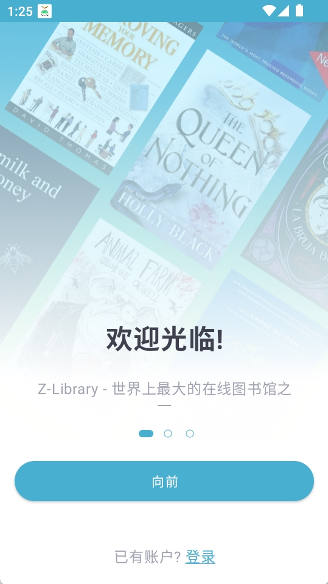
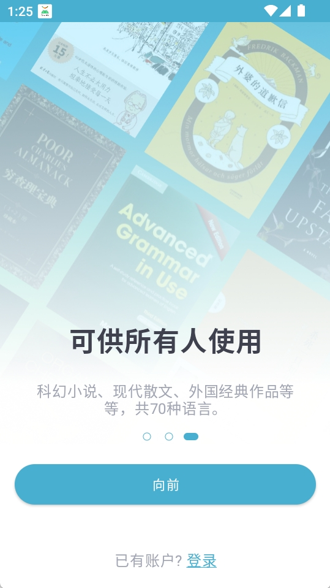

Z-Library 对比评测：它在免费电子书库里排第几
用过 Gutenberg、Internet Archive、Library Genesis 之后，回头看 Z-Library 的差异化到底在哪里——搜索精度、联动体验和补位链，三件事让它在同类里有了自己的位置。
免费电子书库这个赛道不缺玩家。Project Gutenberg 扛着古腾堡的百年招牌，公版书稳；Internet Archive 体量最杂，扫描本海量；Library Genesis 一度是不少人的默认选择。那 Z-Library 在这条赛道里排在什么位置，值得单独拿出来说？
我用了大概两年，从Z-Library官网的网页版到 App 来回切过，额度耗尽的焦虑、字段搜索的爽、直发 Kindle 的便利都领教过。结论先放出来：如果你找的是近年的非绝版书、中文或小众语种、或者你有 Kindle 等设备需要顺滑联动，它确实比同类更顺手——但它的取舍也很明显。
比同类更细的搜索精度
搜书这件事，表面看各家都有搜索框，差别藏在默认行为里。
同类工具大多给你一个全字段搜索框，输入关键词后作者、书名、出版社一股脑混在一起扔回来。Z-Library 的字段限定语法把搜索钉死在你想要的维度上：title:weather author:Neil 直接锁死「某作者写的某主题」，publisher:Carcanet songs 在全字段里找 songs 但只保留这个出版社的结果。三件套加排除词 title:geology -pdf，一次输入全部约束。
这个语法为什么值得单拎出来说？因为它不是「高级筛选」的图形化替代。筛选是调滑块、勾选项，改一次点一次；字段语法是一次输完全部条件，复制粘贴就能复用。我有时候搜一个作者的全部非扫描版，author:xxx -pdf 比在筛选器里先输作者名再手动勾掉 PDF 格式快得多。
当然有前提：这套冒号语法只在网页版生效，App 内置搜索框版本旧，运算符不认。这个边界条件很多人踩过坑——输了一串 title:xxx author:yyy 没反应，以为自己写错了，其实是换了界面。更多进阶搜索技巧可以翻Z-Library文档里的搜索方法论章节。
设备联动比同行走得更远
Send-to-Kindle 这个功能是我从 Library Genesis 转过来的直接原因。
常规路径是：下载到手机 → 传到电脑 → 用 Amazon 渠道转 Kindle，三跳。Z-Library 把中间全部砍掉——书目页点一下，五分钟内投到 Kindle。代价是有两道硬闸：文件最大 20MB，格式仅限七种常见格式（DOC、PDF、EPUB 等），扫描版大 PDF 和 DJVU 格式基本过不去。但只要条件满足，体验上是质的差别。

还有一个容易懵的点：每本书都要单独过一次 Amazon 的验证邮件。发完书不会自动到，得去收件箱（含垃圾邮件）点确认——这不是站内故障，是 Amazon 侧的规则。第一次用没经验，发了三本都没到，翻完垃圾邮件才发现每本都躺着一封验证信。
同类工具要么没有联动（Gutenberg 需要手动转格式上传），要么需要第三方工具中转（Library Genesis 常见搭配 Calibre + Send to Kindle）。Z-Library 直接把联动做进了书目页，虽然条件严格，但满足条件时一步到位。
补位链比别家多一条被动等待的路
搜不到书怎么办？同类的常规解法就一个：要么没有，要么换关键词。Z-Library 给了一个被动选项：Z-Alerts（入库提醒）。
流程是这样：搜不到的书，设个提醒，书库收录后官方通知你——把「找不到」从终点变成「还没到」。更细的是它和求书（Request）的分工：求书只接受有 ISBN 的书、主动推动社区补录；Z-Alerts 无 ISBN 的书也能设、只盯变化不推动收录。两者不互斥，有 ISBN 的书可以两条都上。
这个设计的妙处在于覆盖了两个死角：网络文学、自出版物、旧刊这类没有 ISBN 的内容，求书通道走不通，但可以挂 Z-Alerts 被动等；而有 ISBN 的热门书，同时求书 + 提醒，推动 + 通知双保险。
同类工具要么只有主动求书（Internet Archive 有类似机制但入口隐蔽），要么连求书都没有（Gutenberg 只接受投稿不接受请求）。多出来的这条被动等待链，对追某作者新作、某系列后续卷的读者来说很实用——不用天天刷，设完提醒该干嘛干嘛。
它的取舍
说了好的，说说它为这些优势付出了什么。
额度始终悬在头顶。 免费档每日有下载限额，用完得等次日。有两个官方提额通道——活跃用户活动（看贡献值）和教育机构合作（批量方案），但前者要求参与社区建设不是纯索取用户能拿到的，后者门槛高需要机构侧配合。不想折腾就只能从官方下载按需升级 Premium，这也是同类里比较普遍但体验上最磨人的限制。
网页版与 App 能力不对等。 字段限定语法、Send-to-Kindle 这些进阶功能，有的只在网页版有，有的 App 版本较旧支持得不完整。日常看阅读进度、管理收藏用 App 没问题，但搜书和直发 Kindle 还是得开网页。
部分格式和场景绕不开。 20MB 以上的扫描版大 PDF、DJVU、FB2、MOBI 这些格式，直发通道直接锁死，只能下载后手动处理。同类里 Internet Archive 对格式的宽容度更高（虽然它也不直接连 Kindle）。
选购结论
什么样的人应该用 Z-Library、什么样的人可以看别的？
适合 Z-Library 的： 有 Kindle 等设备需要顺滑联动的；搜书时需要精确锁定书名/作者/出版社字段的；追特定作者或系列、不怕等但怕错过的；不想折腾 Calibre 等第三方工具的普通读者。
可以看同类的： 只看公版经典、不在乎搜索精度的（Gutenberg 够用）；需要大量扫描版学术资料、格式越杂越好的（Internet Archive 或 Library Genesis 更合适）；完全不想注册、打开就用的（Gutenberg 和 Internet Archive 免注册）。

最后一句话：如果你有 Kindle、搜书嫌全字段太吵、偶尔会追更新中的作者，Z-Library 是同类里目前最顺手的选择——把那些别人绕路的环节做进了自己的功能里，代价是你得接受额度和界面分裂这两个长期的不方便。但对绝大多数普通读者来说，这两个取舍换回来的联动效率，值。